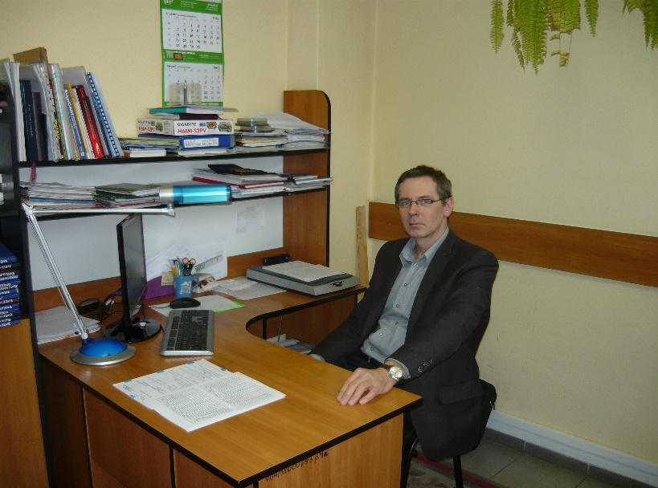

Historia
Centrum Kształcenia Praktycznego w Sieradzu rozpoczęło swoją działalność w dniu 1 stycznia 1997 roku jako jedno z 16 nowo powstałych w kraju placówek oświatowych powołane do wspomagania kształcenia zawodowego.
Z dniem 1 września 2008 roku Centrum Kształcenia Praktycznego w Sieradzu przekształca się w zespół placówek oświatowych pod nazwą Centrum Edukacji Zawodowej w Sieradzu, w skład którego wchodzą:
- Centrum Kształcenia Praktycznego (CKP)
- Ośrodek Dokształcania i Doskonalenia Zawodowego (ODiDZ)
Centrum Edukacji Zawodowej realizuje zadania z zakresu edukacji zawodowej młodzieży wynikające z nowej podstawy programowej dla danego zawodu, kształcenie ustawiczne osób dorosłych oraz dokształcanie pracowników młodocianych. Realizujemy zadania zlecone przez szkoły, organ prowadzący oraz inne jednostki organizacyjne i podmioty gospodarcze.
Centrum Edukacji Zawodowej w Sieradzu to profesjonalna i uznana na rynku oświatowym placówka, która organizuje zajęcia praktyczne, praktyczną naukę zawodu, zajęcia teoretyczne i specjalizujące dla uczniów szkół ponadgimnazjalnych powiatu sieradzkiego oraz kursy z teoretycznych przedmiotów zawodowych dla uczniów szkół województwa łódzkiego. Ponadto Centrum organizuje kursy zawodowe dla dorosłych, prowadzi działalność usługową z zakresu napraw samochodów, obróbki skrawaniem, budownictwa i inne. CEZ jest jedyną tego typu placówką w mieście i Powiecie Sieradzkim.
Centrum Edukacji Zawodowej w Sieradzu to dobrze wykształcona, młoda i doświadczona kadra 33 nauczycieli, którą kieruje dyrektor CEZ wspierany przez dwóch zastępców.
Nauczyciele CEZ kształcą młodzież w 18 zawodach na poziomie zasadniczej szkoły zawodowej i technikum.
Profile
W CKP prowadzimy zajęcia w następujących zawodach:
TECHNIK W ZAWODZIE
- Technik mechatronik
- Technik mechanik
- Technik pojazdów samochodowych
- Technik urządzeń i systemów energetyki odnawialnej
- Technik urządzeń sanitarnych
- Technik budownictwa
- Technik elektryk
ROBOTNIK W ZAWODZIE
- Fryzjer
- Monter sieci, instalacji i urządzeń sanitarnych
- Elektryk
- Monter mechatronik
- Elektromechanik pojazdów samochodowych
- Mechanik pojazdów samochodowych
- Blacharz samochodowy
- Ślusarz – dodatkowe uprawnienia spawalnicze
- Monter zabudowy i robót wykończeniowych w budownictwie
- Murarz-tynkarz
Współprace
Współpracujemy z wieloma szkołami w regionie, m.in.:
- ZSP Nr 1 w Sieradzu,
- ZSP Nr 2 w Sieradzu,
- Specjalnym Ośrodkiem Szkolno-Wychowawczym w Sieradzu,
- ZSP w Złoczewie,
- ZSP w Warcie,
- ZSP w Błaszkach,
- ZSZ Nr 1 w Zduńskiej Woli,
W których uczniowie mają możliwość podjęcia praktycznej nauki zawodu w Centrum Kształcenia Praktycznego oraz zdobycia wiedzy teoretycznej w Ośrodku Dokształcania i Doskonalenia Zawodowego.
W Centrum Kształcenia Praktycznego realizowane są zajęcia praktyczne, teoretyczne, pracowniane i specjalizujące dla uczniów zasadniczych szkół zawodowych, techników, liceów profilowanych.
Kierownictwo
Dyrektor
mgr inż. Wojciech Banaszczyk

Z-ca dyr. ds. CKP
mgr inż. Dariusz Śmigiera
Główny Księgowy
Alicja Szewczyk
Kierownik Administracyjno – Gospodarczy
Jolanta Pędziwiatr
Kierownik Pracowni
mgr inż. Jerzy Rybak